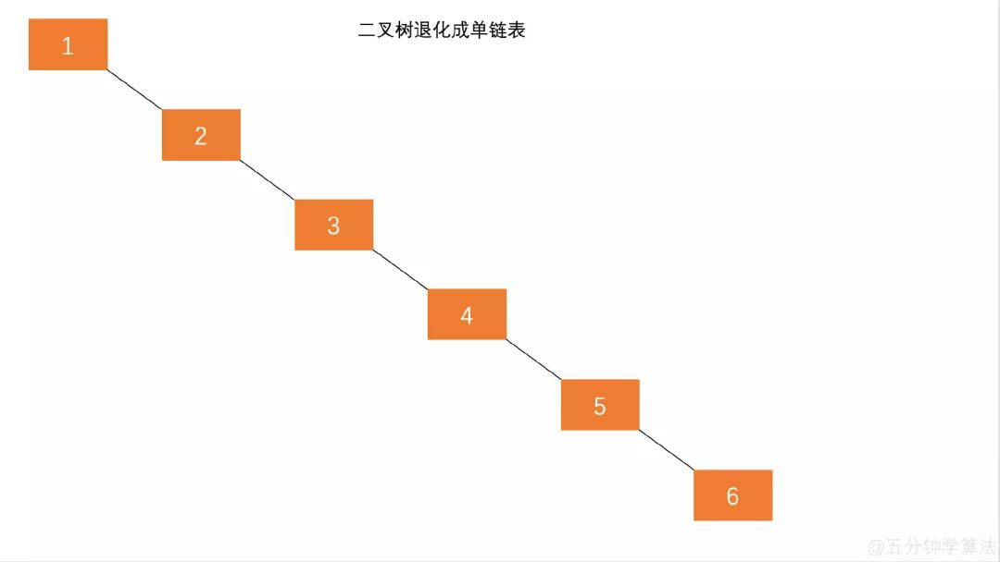
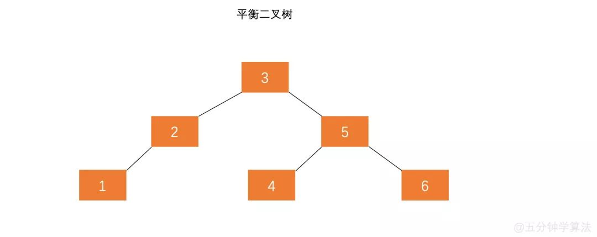

平衡树(AVL)
前言
本人平时学习及收集内容，欢迎参入一起讨论。
内容
一、为什么要有平衡二叉树
二叉搜索树一定程度上可以提高搜索效率，但是当原序列有序时，例如序列A={1,2,3,4,5,6},构造二叉搜索树如图。依据此序列构造的二叉搜索树为右斜树，同时二叉树退化成单链表，搜索效率降低为 O(n)。

在此二叉搜索树中查找元素 6 需要查找 6 次。
二叉搜索树的查找效率取决于树的高度，因此保持树的高度最小，即可保证树的查找效率。同样的序列 A，将其改为下图的方式存储，查找元素 6 时只需比较 3 次，查找效率提升一倍。

可以看出当节点数目一定，保持树的左右两端保持平衡，树的查找效率最高。
这种左右子树的高度相差不超过 1 的树为平衡二叉树。
二、定义
平衡二叉查找树： 是基于二分法的策略提高数据的查找速度的二叉树的数据结构。由前苏联的数学家 Adelse-Velskil 和 Landis 在 1962 年提出的高度平衡的二叉树，根据科学家的英文名也称为 AVL 树。它具有如下几个性质：
- 可以是空树。
- 假如不是空树，任何一个节点的左子树与右子树都是平衡二叉树，并且高度之差的绝对值不超过 1。
三、平衡因子
定义：某节点的左子树与右子树的高度(深度)差即为该节点的平衡因子，平衡二叉树中不存在平衡因子大于 1 的节点。在一棵平衡二叉树中，节点的平衡因子只能取 0、1 或者-1，分别对应着左右子树等高，左子树比较高，右子树比较高。
四、AVL 树插入时的失衡与调整
在对 AVL 树添加或移除节点后，我们要计算节点的高度并验证树是否需要进行平衡。向 AVL 树插入节点时，可以执行单旋转或双旋转两种平衡操作，分别对应四种场景。
- 左-左（LL）： 向右的单旋转
- 右-右（RR）： 向左的单旋转
- 左-右（LR）： 向右的双旋转（先 LL 旋转，再 RR 旋转）
- 右-左（RL）： 向左的双旋转（先 RR 旋转，再 LL 旋转）
4.1 左-左：向右的单旋转
这种情况出现于节点的左侧子节点的高度大于右侧子节点的高度时，并且左侧子节点也是平衡或左侧较重的。
执行的操作过程：
- 与平衡操作想着的节点有三个（X、Y、Z），将节点 X 置于节点 Y（平衡因子为+2）所在的位置
相关代码：
rotationLL(node){
const tmp = node.left;
node.left = tmp.right
tmp.right = node;
return tmp;
}
2
3
4
5
6
4.2 右-右（RR）:向左的单旋转
右-右的情况和左左的情况相反。它出现于右侧子节点的高度大于左侧子节点的高度，并且右侧子节点也是平衡或右侧较重的。
操作步骤：
- 与平衡操作相关的节点有三个（X、Y、Z），将节点 X 置于节点 Y（平衡因子为-2）所在的位置；
- 节点 X 的右子树操持不变；
- 将节点 Y 的右子节点置为节点 X 的左节点 Z；
- 将节点 X 的左子节点置为节点 Y；
相关代码：
rotationRR(node){
const tmp = node.right;
node.right = tmp.left;
tmp.left = node;
return tmp;
}
2
3
4
5
6
4.3 左-右（LR）：向右的双旋转
这种情况出现于左侧子节点的高度大于右侧子节点的高度，并且左侧子节点右侧较重。
执行的操作：
- 将节点 X 置于节点 Y（平衡因子为-2）所在的位置；
- 将节点 Z 的左子节点置为节点 X 的右子节点；
- 将节点 Y 的右子节点置为节点 X 的左子节点；
- 将节点 X 的右子节点置为节点 Y；
- 将节点 X 的左子节点置为节点 Z；
相关代码：
rotationLR(node){
node.left = this.rotationRR(node.left);
return this.rotationLL(node);
}
2
3
4
4.4 右-左（RL）：向左的双旋转
右-左的情况和左-右的情况相反。这种情况出现于右侧子节点的高度大于左侧子节点的高度，并且右侧子节点左侧较重。
执行的操作：
- 将节点 X 置于节点 Y（平衡因子为+2）所在的位置；
- 将节点 Y 的左子节点置为节点 X 的右子节点；
- 将节点 Z 的右子节点置为节点 X 的左子节点；
- 将节点 X 的左子节点置为节点 Y；
- 将节点 X 的右子节点置为节点 Z；
相关代码：
rotationRL(node){
node.right = this.rotationLL(node.right);
return this.rotationRR(node);
}
2
3
4
五、AVL 树的四种插入节点方式
假设一颗 AVL 树的某个节点为 A，有四种操作会使 A 的左右子树高度差大于 1，从而破坏了原有 AVL 树的平衡性。平衡二叉树插入节点的情况分为以下四种：
| 插入方式 | 描述 | 旋转方式 |
|---|---|---|
| LL | 在 A 的左子树根节点的左子树上插入节点而破坏平衡 | 右旋转 |
| RR | 在 A 的右子树根节点的右子树上插入节点而破坏平衡 | 左旋转 |
| LR | 在 A 的左子树根节点的右子树上插入节点而破坏平衡 | 先左旋后右旋转 |
| RL | 在 A 的右子树根节点的左子树上插入节点而破坏平衡 | 先右旋后左旋转 |
插入相关代码
在向 AVL 树插入节点后，我们需要检查树是否需要进行平衡，因此要使用递归计算以每个插入的节点为根的节点的平衡因子，然后对每种情况应用正确的旋转。
insert(key){
this.root = this.insertNode(this.root,key);
}
insertNode(node,key){
// 像在BST树中一样插入节点
if(node == null){
return new Node(key);
}else if (this.compareFn(key,node.key)===Compare.LESS_THAN){
node.left = this.insertNode(node.left,key);
}else if(this.compareFn(key,node.key)===Compare.BIGGER_THAN){
node.right = this.insertNode(node.right,key);
}else{
return node; // 重复的键
}
// 如果需要，将树进行平衡操作
const balanceFactor = this.getBalanceFactor(node);
if(balanceFactor === BalanceFactor.UNBALANCED_LEFT){
if(this.compareFn(key,node.left.key) === Compare.LESS_THAN){
node = this.rotationLL(node);
}else{
return this.rottionLR(node);
}
}
if(balanceFactor === BalanceFactor.UNBALANCED_RIGHT){
if(this.compareFn(key,node.right.key)===Compare.BIGGER_THAN){
node = this.rotationRR(node);
}else{
return this.rotationRL(node);
}
}
return node;
}
2
3
4
5
6
7
8
9
10
11
12
13
14
15
16
17
18
19
20
21
22
23
24
25
26
27
28
29
30
31
32
如果在向左侧子树插入节点后树不平衡了，我们需要比较是否插入的键小于左侧子节点的键。如果是，我们要进行 LL 旋转。否则，要进行 LR 旋转。
如果在向右侧子树插入节点后树不平衡了，我们需要比较是否插入的键小于右侧子节点的键。如果是，我们要进行 RR 旋转。否则，要进行 RL 旋转。
删除相关代码
除了移除节点外，我们还要难移除后树是否还是平衡的，如果不是，就要进行必要的旋转操作。
removeNode(node,key){
node = super.removeNode(node,key);
if(node == null){
return node; // null，不需要进行平衡
}
// 检测树是否平衡
const balanceFactor = this.getBalanceFactor(node);
if(balanceFactor === BalanceFactor.UNBALANCED_LEFT){
const balanceFactorLeft = this.getBalanceFactor(node.left);
if(balanceFactorLeft === BalanceFactor.BALANCED || balanceFactorLeft === BalanceFactor.SLIGHTLY_UNBALANCED_LEFT){
return this.rotationLL(node);
}
if(balanceFactorLeft === BalanceFactor.SLIGHTLY_UNBALANCED_RIGHT){
return this.rotationLR(node.left);
}
}
if(balanceFactor === BalanceFactor.UNBALANCED_RIGTH){
const balanceFactorRight = this.getBalanceFactor(node.right);
if(balanceFactorRight === BalanceFactor.BALANCED || balanceFactorRight === BalanceFactor.SLIGHTLY_UNBALANCED_RIGHT){
return this.rotationRR(node);
}
if(balanceFactorRight === BalanceFactor.SLIGHTLY_UNBALANCED_LEFT){
return this.rotationRL(node.right);
}
}
return node;
}
2
3
4
5
6
7
8
9
10
11
12
13
14
15
16
17
18
19
20
21
22
23
24
25
26
27
如果在从左侧子树移除节点后树不平衡了，我们要计算左侧子树的平衡因子。如果左侧子树向左不平衡，要进行 LL 旋转；如果左侧子树向右不平衡，要进行 LR 旋转。
最后一种情况是，如果在从右侧子树移除节点后树不平衡了，我们要计算右侧子树的平衡因子。如果右侧子树向右不平衡，要进行 RR 旋转；如果右侧子树向左不平衡，要进行 LR 旋转。
六、红黑树
6.1 红黑树特点
红黑树是一种常见的自平衡二叉查找树，常用于关联数组、字典，在各种语言的底层实现中被广泛应用，Java 的 TreeMap 和 TreeSet 就是基于红黑树实现的。
在红黑树中，每个节点都遵循以下规则：
- 顾名思义，每个节点不是红的就是黑的；
- 树的根节点是黑的；
- 所有叶节点都是黑的（用 NULL 引用表示的节点）；
- 如果一个节点是红色的，那么它的两个子节点都是黑的；
- 不能有两个相邻的红节点，一个红节点不能有红的父节点或子节点；
- 从给定的节点到它的后代节点的所有路径包含相同数量的黑色节点
6.2 红黑树相关代码
const Compare = {
LESS_THAN: -1,
BIGGER_THAN: 1,
EQUALS: 0
}
function defaultCompare(a, b) {
if (a === b) {
return Compare.EQUALS
}
return a < b ? Compare.LESS_THAN : Compare.BIGGER_THAN
}
const Colors = {
RED: 0,
BLACK: 1
}
class Node {
constructor(key) {
this.key = key
this.left = undefined
this.right = undefined
}
toString() {
return `${this.key}`
}
}
class RedBlackNode extends Node {
constructor(key) {
super(key)
this.left = undefined
this.right = undefined
this.parent = undefined
this.color = Colors.RED
}
isRed() {
return this.color === Colors.RED
}
flipColor() {
if (this.color === Colors.RED) {
this.color = Colors.BLACK
} else {
this.color = Colors.RED
}
}
}
import BinarySearchTree from './birary-search-tree-es6'
class RedBlackTree extends BinarySearchTree {
constructor(compareFn = defaultCompare) {
super(compareFn)
this.root = null
}
rotationLL(node) {
const tmp = node.left
node.left = tmp.right
if (tmp.right && tmp.right.key) {
tmp.right.parent = node
}
tmp.parent = node.parent
if (!node.parent) {
this.root = tmp
} else {
if (node === node.parent.left) {
node.parent.left = tmp;
} else {
node.parent.right = tmp;
}
}
tmp.right = node
node.parent = tmp
}
/**
* Right right case: rotate left
*
* a b
* / \ / \
* c b -> rotationRR(a) -> a e
* / \ / \
* d e c d
*
*/
rotationRR(node) {
const tmp = node.right
node.right = tmp.left
if (tmp.left && tmp.left.key) {
tmp.left.parent = node
}
tmp.parent = node.parent
if (!node.parent) {
this.root = tmp
} else {
if (node === node.parent.left) {
node.parent.left = tmp
} else {
node.parent.right = tmp
}
}
tmp.left = node
node.parent = tmp
}
insert(key) {
if (this.root == null) {
this.root = new RedBlackNode(key)
this.root.color = Colors.BLACK
} else {
const newNode = this.insertNode(this.root, key)
this.fixTreeProperties(newNode)
}
}
// 插入节点
insertNode(node, key) {
if (this.compareFn(key, node.key) === Compare.LESS_THAN) {
if (node.left == null) {
node.left = new RedBlackNode(key)
node.left.parent = node
return node.left
} else {
return this.insertNode(node.left, key)
}
} else if (node.right == null) {
node.right = new RedBlackNode(key)
node.right.parent = node
return node.right
} else {
return this.insertNode(node.right, key)
}
}
fixTreeProperties(node) {
while (node && node.parent && node.parent.color === Colors.RED && node.color !== Colors.BLACK) {
let parent = node.parent
const grandParent = parent.parent
// case A
if (grandParent && grandParent.left === parent) {
const uncle = grandParent.right
if (uncle && uncle.color === Colors.RED) {
grandParent.color = Colors.RED
parent.color = Colors.BLACK
uncle.color = Colors.BLACK
node = grandParent
} else {
if (node === parent.right) {
this.rotationRR(parent)
node = parent
parent = node.parent
}
this.rotationLL(grandParent)
parent.color = Colors.BLACK
grandParent.color = Colors.RED
node = parent
}
} else {
const uncle = grandParent.left
if (uncle && uncle.color === Colors.RED) {
grandParent.color = Colors.RED
parent.color = Colors.BLACK
uncle.color = Colors.BLACK
node = grandParent
} else {
if (node === parent.left) {
this.rotationLL(parent)
node = parent
parent = node.parent
}
}
this.rotationRR(grandParent)
parent.color = Colors.BLACK
grandParent.color = Colors.RED
node = parent
}
}
this.root.color = Colors.BLACK
}
getRoot() {
return this.root
}
}
2
3
4
5
6
7
8
9
10
11
12
13
14
15
16
17
18
19
20
21
22
23
24
25
26
27
28
29
30
31
32
33
34
35
36
37
38
39
40
41
42
43
44
45
46
47
48
49
50
51
52
53
54
55
56
57
58
59
60
61
62
63
64
65
66
67
68
69
70
71
72
73
74
75
76
77
78
79
80
81
82
83
84
85
86
87
88
89
90
91
92
93
94
95
96
97
98
99
100
101
102
103
104
105
106
107
108
109
110
111
112
113
114
115
116
117
118
119
120
121
122
123
124
125
126
127
128
129
130
131
132
133
134
135
136
137
138
139
140
141
142
143
144
145
146
147
148
149
150
151
152
153
154
155
156
157
158
159
160
161
162
163
164
165
166
167
168
169
170
171
172
173
174
175
176
177
178
179
180
181
182
183
184
185
186
187
188
6.3 红黑树应用
红黑树广泛用在 Java 的集合框架(HashMap、TreeMap、TreeSet)、Nginx 的 Timer 管理、Linux 虚拟内存管理以及 C++的 STL 等等场景
在 Linux 内核中，每个用户进程都可以访问 4GB 的线性虚拟空间，虚拟空间往往需要多个虚拟内存区域描述，对这些内存区域，Linux 内核采用了链表以及红黑树形式组织。内存区域按地地址排序，链接成一个链表以及一颗红黑树，寻找空闲区域时只需要遍历这个链表，在发生缺页中断时通过红黑树快速检索特定内存区域。
参考资料
- 《学习 JavaScript 数据结构与算法》
- 什么是平衡二叉树（AVL）
- 我画了 20 张图，给女朋友讲清楚红黑树
- 通俗易懂的红黑树图解(上)
- 通俗易懂的红黑树图解(下)
- 动画 | 什么是红黑树
- 动画：二叉树在实际中的应用(下）
- 动画 | 什么是二分搜索树（附伪代码）
联系作者
平凡世界，贵在坚持。